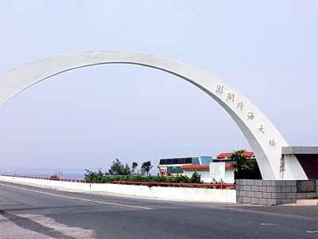

澎湖跨海大橋簡介
澎湖跨海大橋位於澎湖縣白沙鄉，橫跨白沙嶼和漁翁嶼(西嶼)，解決兩島的交通運輸問題，是國際著名的跨海大橋，於西元1965年開始興建，於1970年完工，在當時是東南亞第一座深海大橋，全橋包括兩端路堤長2478公尺，其中路堤長319公尺，橋面長2159公尺，橋面寬5.1公尺，而且有7處8公尺寬的避車道，大小橋孔共有76孔，橋墩74座，耗資新台幣壹億肆佰伍拾萬元，是澎湖本島交通主要幹道。
大倉嶼－欣賞跨海大橋的好地方
大倉嶼恰好位於白沙嶼和漁翁嶼中間，從這裡遠望跨海大橋如長虹凌空，美景無邊，大倉與更是澎湖灣內海中唯一有居民的島嶼，從馬公重光里(後屈潭)搭船約20分鐘即可到達。大倉嶼面積約18公頃，由於附近是澎湖有名的內灣漁場，在早期稱作『大魚倉』，周圍有澎湖嶼、白沙嶼、漁翁嶼等島嶼，因此擁有『內海之珠』的稱號。
澎湖旅遊
澎湖縣島嶼眾多、海洋資源豐富，著名的旅遊景點例如天后宮、螃蟹博物館、跨海大橋、漁人碼頭、吉貝島、鯨魚洞、赤崁碼頭等等，是民眾消暑、觀海、賞豚的好去處，水上活動的種類相當豐富像是香蕉船、水上摩托車、水上拖曳傘等等刺激的娛樂設施，遊客也可搭乘玻璃船欣賞海底美景或近海浮潛與魚兒做近距離的互動都會讓你愛上澎湖